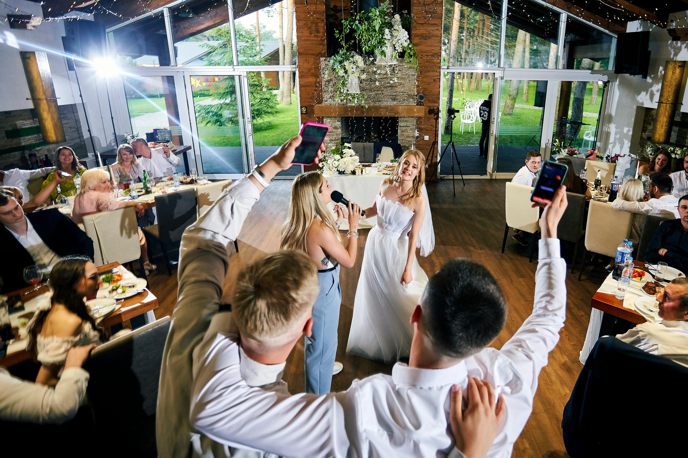
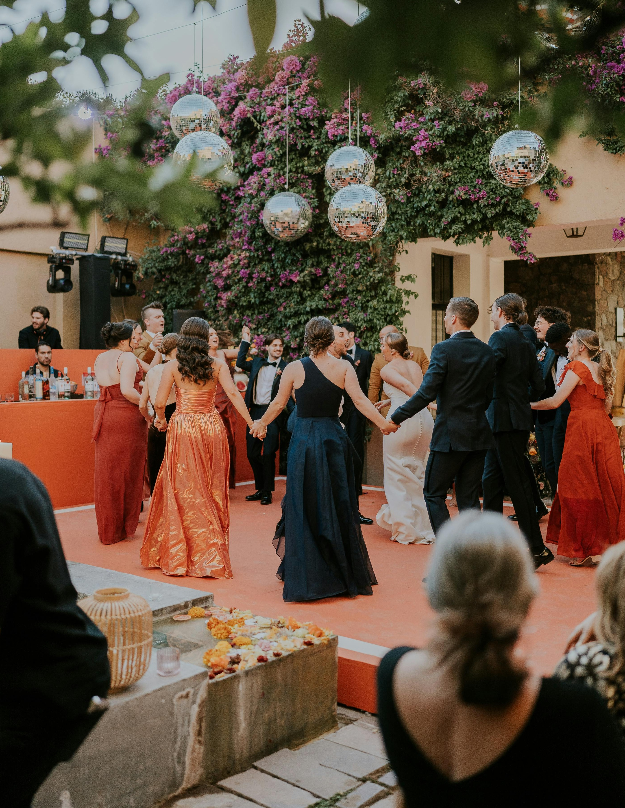
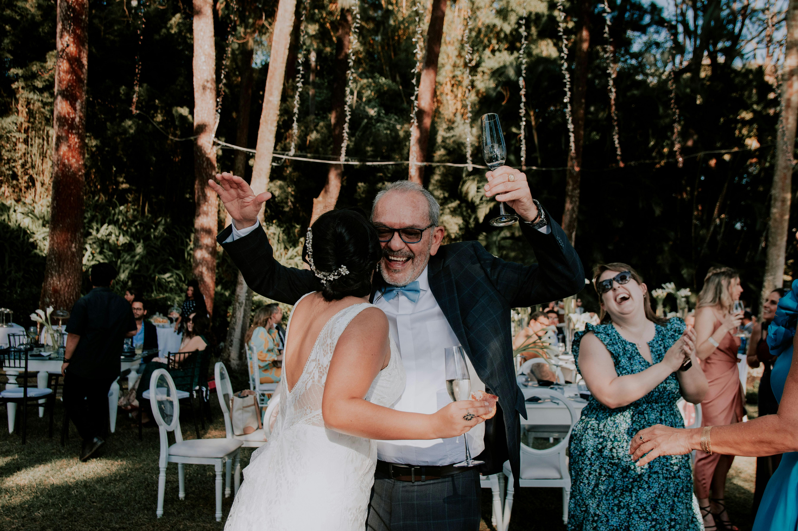

Add some extra connection and expression to your day

Your wedding is a time to celebrate your love and to commit yourself to continue building your loving relationship. Learning and performing a first dance is a great way to invest in your relationship, get to know each other better, and make your wedding that much more special.
Weddings are a time of connection with and appreciation for those who support us and make us strong. Individuals getting married often dance with their parents. You might also wish to dance with your child, sibling, guardian, or some other family member who has supported you.


Friends, found family, and other significant connections can be some of our strongest supporters. You can share your joy with them via a dance on your wedding. Spending time in dance lessons with these people can strengthen your connection and communication as you move into this new phase of life with your spouse.
Why not spice up the wedding by getting the wedding party involved? Working together on a group routine is a great way to have fun and bond. The individuals getting married could be part of a dance with the wedding party, or the wedding party could put on a show for them. I can help teach, choreograph, or fine-tune such a dance.


A dance lesson at the start of your wedding reception can help wedding guests feel comfortable and adventurous on the dance floor. Instruction at the beginning of a wedding reception gets the party started on a high note. I can teach several fun moves in your favorite style, or teach several styles quickly within a session.